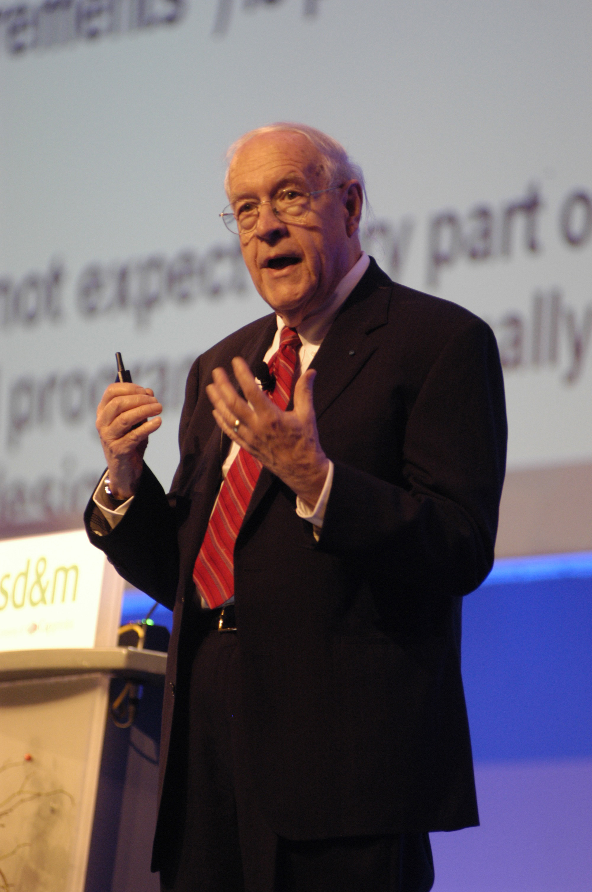

On April 7, 1964, in a series of press conferences held simultaneously across 63 cities in the United States and 14 countries around the world, IBM Chairman Thomas J. Watson Jr. made an announcement that would forever alter the course of human history. It wasn't just a new computer; it was a new way of thinking about machines. Watson called it "the most important product announcement in the company's history." Within the walls of IBM, it was known as the "Five Billion Dollar Gamble." To the rest of the world, it was the IBM System/360.
In the early 1960s, the computing landscape was a fragmented mess. IBM, the dominant force in the industry, was a victim of its own success. It sold several distinct lines of computers, each tailored to a specific niche. The 1400 series was for small businesses; the 7000 series was for scientific research; the 600 series was for accounting. Each of these lines had its own unique instruction set, its own specialized peripherals, and—most critically—its own proprietary software.
For a customer, this meant that growing their business was a nightmare. If a bank started with an IBM 1401 and outgrew it, they couldn't simply buy a bigger IBM machine. They had to scrap their entire library of programs, retrain their staff, and start from scratch with a completely different architecture. This "siloed" approach was inefficient for customers and even more so for IBM, which had to maintain separate engineering teams, manufacturing plants, and service departments for every single product line.

The SPREAD Committee and the "Bet-the-Company" Move
The solution came from a secret internal group known as the SPREAD committee (Systems Programming, Research, Engineering, and Development). Led by Bob Evans, the committee proposed a radical, almost suicidal idea: IBM should scrap all of its existing computer lines and replace them with a single, compatible family of machines. These machines would range from small to massive, but they would all share the same "architecture"—a term coined during this project by a young manager named Fred Brooks.
"Architecture... is the conceptual structure of the machine as seen by the programmer, that is, the functional behavior of the machine as distinct from its implementation." — Fred Brooks
The project was codenamed "New Product Line" (NPL), but as its scope expanded to cover the full "360 degrees" of the computing compass, it was renamed System/360. The financial risk was staggering. The estimated cost was $5 billion (roughly $45 billion today). At the time, IBM's annual revenue was roughly $3 billion. If the System/360 failed, IBM would not just lose its market lead; it would likely go bankrupt. Fortune magazine later called it "IBM's $5,000,000,000 Gamble."
Engineering the Standard: The 8-Bit Byte and ISA
To achieve this unprecedented compatibility, the S/360 team had to standardize everything. Before 1964, computers used a wild variety of word sizes: 6-bit, 36-bit, 48-bit. The S/360 team made the historic decision to standardize on the **8-bit byte**. This allowed for a character set that included both uppercase and lowercase letters, as well as a more efficient way to handle numerical data. This decision alone essentially created the data standards we still use in modern PCs and smartphones today.
The second great innovation was the Instruction Set Architecture (ISA). The System/360 used a common set of instructions across all models. To make this work, IBM used a clever trick called "microcode." On a small, inexpensive Model 30, a complex instruction might be emulated by several simpler hardware steps. On a high-end Model 91, that same instruction would be executed by dedicated, high-speed circuitry. To the programmer, however, the result was the same. A program written for the smallest Model 30 would run perfectly on the largest Model 91.

The Crisis: OS/360 and the Birth of Software Engineering
While the hardware was revolutionary, the software became a nightmare. Developing an operating system that could run on every model in the family—a project called OS/360—proved to be the most complex engineering task in history. The project fell years behind schedule. Thousands of programmers were thrown at the problem, but the more people were added, the slower the project moved.
Fred Brooks, who was promoted to lead the software effort, observed this phenomenon firsthand. He realized that the cost of communication and coordination among large teams grew exponentially, eventually swallowing up all productive work time. This insight became known as "Brooks’s Law": *Adding manpower to a late software project makes it later.*

Brooks eventually chronicled these struggles in his 1975 book, *The Mythical Man-Month*. It remains the most influential book on software project management ever written. He argued that software development was a "craft" that could not be scaled like factory production, and he introduced concepts like the "Surgical Team" and the "Second-System Effect." In many ways, the field of Software Engineering as we know it was born from the fires of the System/360 project.
The Triumph and the Mainframe Legacy
Despite the delays and the staggering costs, the System/360 was an overwhelming success. When it finally reached customers, it changed the way the world did business. Airlines used it for reservation systems (SABRE); banks used it for global transaction processing; NASA used it to help land men on the moon. The "upward compatibility" promised by IBM proved to be its greatest selling point. Customers could buy a small machine and upgrade it as they grew, knowing their software investment was safe.
The System/360 didn't just win the market; it created the "Mainframe" as a permanent institution. The architecture was so robust that it has survived through six decades of technological upheaval. Today's IBM zSystems mainframes, which power the global financial system, are still backward-compatible with the instructions written for the System/360 in 1964. If you have a piece of binary code compiled for a S/360 Model 30, it will still run on a modern IBM z16 today.
Why it Matters Today
Every time you swipe a credit card, book a flight, or check your bank balance, you are likely interacting with a descendant of the System/360. By standardizing the 8-bit byte and the concept of an Instruction Set Architecture, IBM didn't just build a computer—they built the foundational infrastructure of the modern digital economy. The $5 billion gamble paid off, and we are still living in the world it created.
Citations & Further Reading
- Brooks, F. P., Jr. (1975). The Mythical Man-Month: Essays on Software Engineering. Addison-Wesley.
- Watson, T. J., Jr., & Petre, P. (1990). Father, Son & Co.: My Life at IBM and Beyond. Bantam.
- Pugh, E. W., Johnson, L. R., & Palmer, J. H. (1991). IBM's 360 and Early 370 Systems. MIT Press.
- IBM Archives. (n.d.). System/360 Announcement. https://www.ibm.com/ibm/history/exhibits/mainframe/mainframe_PR360.html
- Computer History Museum. (n.d.). The IBM System/360. https://www.computerhistory.org/revolution/mainframes-and-minicomputers/7/160